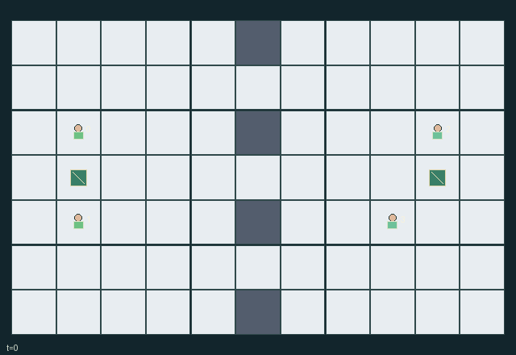

GI142 · Lantern Flag Rescue

Return the enemy flag to the carrier team base while the carrier team own flag is on its home base. Team 0 is agents 0,1; team 1 is agents 2,3.
Identity and original contract
4 independently actionable roles; 8 discrete commands per role; 131 native observation columns per role; original horizon 72 steps. Declared per-step reward range: -1.01 to 1.0. Observation regime: fully_observable.
Source SHA-256: dbed668a41870f1fc914267c5ee0f95ee848bb4d00a574bfa0b10115e36b8468
The objective, rewards, population, map and horizon remain original. A preview is not a success claim.
Objective and gameplay
Return the enemy flag to the carrier team base while the carrier team own flag is on its home base. Team 0 is agents 0,1; team 1 is agents 2,3.
Position-dependent tags immobilize enemies for four calls and drop their flags; stationary adjacent ally guarding prevents tags; adjacent ally rescue restores the prisoner action set early. Carrying, interception and blocking alter actual paths.
- Teams are agents 0/1 and 2/3. Cross the real wall openings at y=1,3,5 to take the enemy flag and return it home.
- Movement cannot enter another player old cell. All contested destinations are rejected; swaps and following into a just-vacated cell are rejected.
- Tag acts on every adjacent enemy after movement. Guard protects an adjacent teammate, never the guarding player itself.
- Mutual tags occur simultaneously. A newly tagged player stays in its actual cell with countdown 4 and drops its flag.
- Captured players have only Wait. Their countdown decreases each call; an adjacent free ally choosing Rescue releases them immediately.
- Touching a grounded own flag returns it home; a free enemy on a grounded flag picks it up automatically.
- A return scores only at the carrier team base with its own flag home. The first return ends play; horizon is 72.
- Team return differential is shared by teammates. Every nonterminal call also costs each role 0.001.
- All map and entity fields are public. Colored capture markers are actual immobilized cells, not a separate teleport mechanic.
Ending: Any team scores its first return. Simultaneous returns are resolved together; their reward differences cancel. Horizon 72 truncates only when no natural completion occurs.
What this game explores
Joint transport & shared access: Positions, load geometry, occupancy and persistent access constrain whose action can succeed next. Distinguish physical handoff, shared controls and simultaneous force from a cosmetic cooperation label.
Team opposition & interception: Cooperation within a team can coexist with opposition between teams. Preserve team membership, capture and possession rules, and report each team's outcomes instead of assuming a single shared return.
Survival, protection & rescue: Protection and repair alter another role's future feasible actions. Record losses, exposure, rescue and infrastructure as well as delivery; survival is determined by the actual kernel.
These are questions supported by rule structure, not observed learning effects.
Play it: operating walkthrough
crucibles play --game gi142Keep Python running and open its printed address. Select this game, set a seed and press Create session. The game itself is always English.
Assign a role range to Host with Assign / take over, or Assign all roles. Invite a second participant with Create player invitation, then assign a disjoint subset. Every original role is available.
For every owned role choose a legal command and press Queue. Arrow keys / WASD queue a declared directional action for the current role camera when available. Space or Advance one joint step advances everyone together. Non-directional games use the selectors.
Unqueued roles use the labelled untrained uniform-legal policy. Take over or release roles before the next step without resetting. Full-state debug is privileged and permanently logged; role cameras preserve permissions. Close the session to retain logs. Server restart does not restore sessions.
Complete command reference
IDs and English labels exactly match the manifest. Availability depends on role, resources, location and phase. An available action can still have no productive effect.
0·Wait
1·Move north
2·Move east
3·Move south
4·Move west
5·Tag adjacent enemies
6·Rescue adjacent captured ally
7·Guard adjacent ally
Roles and capability identifiers
These original role names describe capabilities, not interchangeable skins. Check each owned role's legal selector before planning handoffs.
agent_0·Team 0 runner
agent_1·Team 0 escort/rescuer
agent_2·Team 1 runner
agent_3·Team 1 escort/rescuer
Information and observation permissions
The public map, every player/flag/base and all displayed dynamic fields/events are shared. Each policy also gets its own role one-hot. Capture markers use the actual prisoner position and countdown; there are no invented jail coordinates.
The GIF is full-state debug and may reveal hidden entities or private state. Train on obs[agent], not the picture, state tree or another role's private row. Field slices and visibility are in the original manifest.
Reinforcement-learning integration
import jax
from crucibles_jaxmarl import make
env = make("gi142")
key = jax.random.PRNGKey(0)
key, rk, ak, sk = jax.random.split(key, 4)
obs, state = jax.jit(env.reset)(rk)
actions = env.sample_actions(ak, state)
obs, state, rewards, dones, info = jax.jit(env.step_env)(sk, state, actions)
done = dones["__all__"]Observations are float32 vectors of width 131; actions are scalar int32; masks have 8 entries. Supply all 4 roles each transition. Masked sampling is an engineering reference, not a trained learner.
step_env retains terminal data without reset. step performs outer autoreset and keeps terminal data in info["raw_state"] and info["raw_observation"]. Use dones["__all__"] for episode boundaries; separate completion, failure and time limit in analysis.
JIT or vmap equal identities and shapes. Split independent reset, policy and transition keys. Group different shapes explicitly; do not shrink the population or horizon. Host rendering stays outside training.
Training questions and fair evaluation
Define valid completion from the objective before fitting. Preserve original rewards and also report real deliveries/services, losses, resource state, unresolved episodes and per-role returns. Animation is not a reward signal.
Positions, load geometry, occupancy and persistent access constrain whose action can succeed next. Distinguish physical handoff, shared controls and simultaneous force from a cosmetic cooperation label.
Cooperation within a team can coexist with opposition between teams. Preserve team membership, capture and possession rules, and report each team's outcomes instead of assuming a single shared return.
Protection and repair alter another role's future feasible actions. Record losses, exposure, rescue and infrastructure as well as delivery; survival is determined by the actual kernel.
Compare memory, communication or centralized critics under matched actor information. Declare critic access; keep actor inputs role-filtered. Match partner/opponent distributions, masks, compute and checkpoint selection. Final tests never enter fitting or selection.
Independent training runs or source-pairing blocks are inferential units; episodes from one policy are not independent training replications. Save hashes, keys, versions, device, time and cost. Negative, zero, failed and indeterminate outcomes are valid. No trained checkpoint or target score is supplied.
Classification and evidence
Overlapping editorial labels are reading aids, not proof of novelty, difficulty, strategic equivalence or learning effects.
- Joint transport & shared access
- Evidence
manifest.task.objective: Return the enemy flag to the carrier team base while the carrier team own flag is on its home base. Team 0 is agents 0,1; team 1 is agents 2,3.
- Evidence
manifest.task.interaction: Position-dependent tags immobilize enemies for four calls and drop their flags; stationary adjacent ally guarding prevents tags; adjacent ally rescue restores the prisoner action set early. Carrying, interception and blocking alter actual paths.
- Evidence
scene.rules.6: A return scores only at the carrier team base with its own flag home. The first return ends play; horizon is 72.
- Team opposition & interception
- Evidence
manifest.task.objective: Return the enemy flag to the carrier team base while the carrier team own flag is on its home base. Team 0 is agents 0,1; team 1 is agents 2,3.
- Evidence
manifest.task.interaction: Position-dependent tags immobilize enemies for four calls and drop their flags; stationary adjacent ally guarding prevents tags; adjacent ally rescue restores the prisoner action set early. Carrying, interception and blocking alter actual paths.
- Evidence
manifest.task.observation_access: The public map, every player/flag/base and all displayed dynamic fields/events are shared. Each policy also gets its own role one-hot. Capture markers use the actual prisoner position and countdown; there are no invented jail coordinates.
- Survival, protection & rescue
- Evidence
manifest.task.interaction: Position-dependent tags immobilize enemies for four calls and drop their flags; stationary adjacent ally guarding prevents tags; adjacent ally rescue restores the prisoner action set early. Carrying, interception and blocking alter actual paths.
- Evidence
manifest.actions.6: Rescue adjacent captured ally
- Evidence
scene.rules.4: Captured players have only Wait. Their countdown decreases each call; an adjacent free ally choosing Rescue releases them immediately.
Source, receipts and preview limits
The world-only English GIF replays saved untrained legal actions through the original kernel. At most 25 actual endpoints include initial and terminal state; no invented interpolation. It is full-state debug, not the role observation.
Original source, observation slices, manifest and mechanism
Native receipt · Presentation receipt
Engineering passes do not establish learning. Nonzero floating differences remain recorded and undetermined; no new tolerance was introduced. Human scores remain unverified.